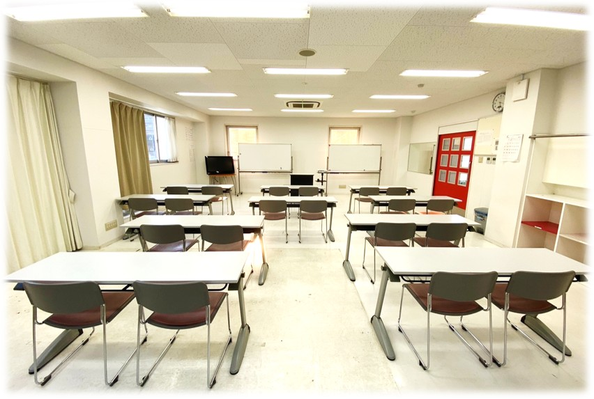
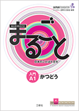
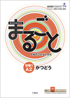
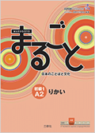
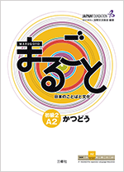
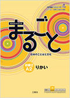
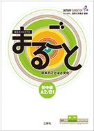
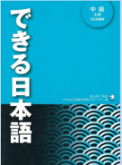
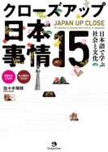

明るく清潔な教室で、世界各国からの留学生が日本語を学んでいます。
📅 時間割
| 時間 | 月曜日 | 火曜日 | 水曜日 | 木曜日 | 金曜日 | |
|---|---|---|---|---|---|---|
| 1 | 9:00 - 9:45 | 総合日本語 | 総合日本語 | 総合日本語 | 総合日本語 | 日本事情 / 異文化理解 |
| 2 | 9:45 - 10:30 | |||||
| 3 | 10:40 - 11:25 | 総合日本語 | 漢字 | 総合日本語 | 漢字 | 学習計画 / 振り返り |
| 4 | 11:25 - 12:10 |
📘 1年次コースフレームワーク
| 学期 （クラス名） |
前期（初級クラス） | 後期（初中級クラス） | ||
|---|---|---|---|---|
| 4月 - 5月（2か月） | 6月 - 9月（4か月） | 10月 - 12月（3か月） | 1月 - 3月（2か月） | |
| 学習段階 | 1 | 2 | 3 | 4 |
| CEFR | A1 | A2 | A2 | A2/B1 |
| JLPT | N5 | N4 | N4 | N4/N3 |
| 主教材 |
 |
  |
  |
 |
| 科目 |
1) 総合日本語 2) 漢字 3) 日本事情・異文化理解 4) 振り返り・学習計画 |
1) 総合日本語 2) 漢字 3) 日本事情・異文化理解 4) 振り返り・学習計画 |
1) 総合日本語 2) 漢字 3) 日本事情・異文化理解 4) 振り返り・学習計画 |
1) 総合日本語 2) 漢字 3) 日本事情・異文化理解 4) 振り返り・学習計画 |
📗 2年次コースフレームワーク
| 学期 （クラス名） |
前期（準中級クラス） | 後期（中級クラス） | ||
|---|---|---|---|---|
| 4月 - 6月（3か月） | 7月 - 9月（3か月） | 10月 - 12月（3か月） | 1月 - 3月（3か月） | |
| 学習段階 | 1 | 2 | 3 | 4 |
| CEFR | B1 | B1 | B2 | B2 |
| JLPT | N3 | N3/N2 | N2 | N2 |
| 主教材 |

|
 |
 |
|
| 科目 |
1) 総合日本語 2) 日本事情・異文化理解 3) 振り返り・学習計画 |
1) 総合日本語 2) 日本事情・異文化理解 3) 振り返り・学習計画 |
1) 総合日本語 2) 地域と言語と社会 3) 振り返り・学習計画 |
1) 総合日本語 2) 地域と言語と社会 3) 振り返り・学習計画 4) 卒業プロジェクト |
📆 年間行事予定(令和8年度)
🏫 学内行事
- 4月: 入学式、オリエンテーション、避難訓練、健康診断、スポーツ大会
- 7月: 七夕、校外学習
- 10月: ハロウィン、校内スピーチ大会
- 11月: 学園祭
- 12月: 他学科との交流会
- 1月: 書き初め
- 2月: 節分、校外学習
- 3月: 修了試験
🌍 学外行事
- 7月: 日本語能力試験
- 9月: 地域交流会
- 10月: おはら祭り
- 12月: 日本語能力試験
- 1月: 県スピーチ大会